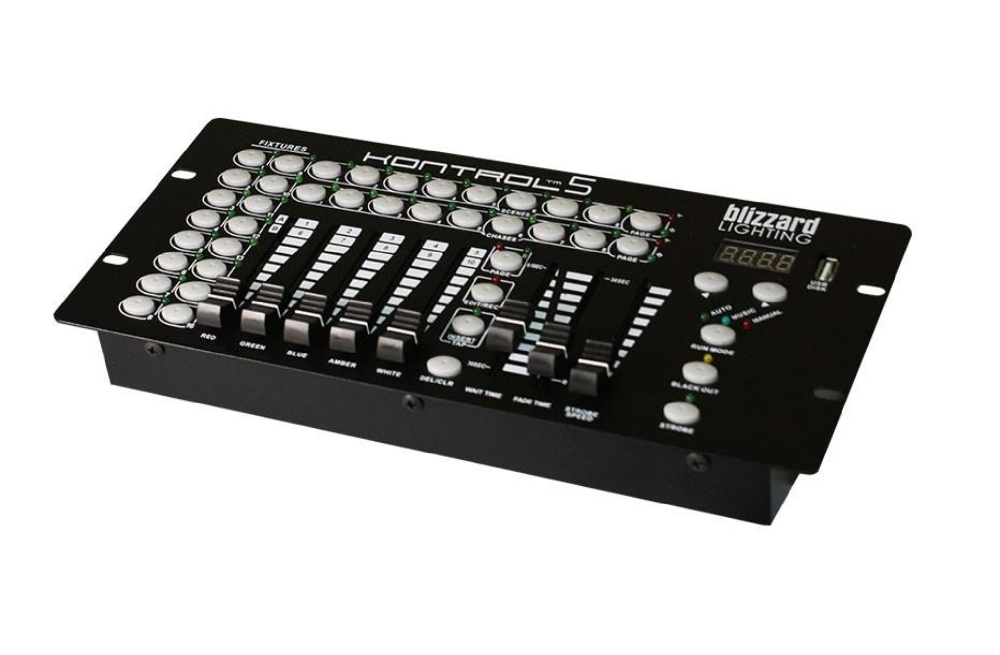

Task, Design and Inspiration:
The lead user is a professional events and venue lighting technician. His job is to set up and operate lighting equipment for his various gigs, creating visually appealing and exciting light shows that accompany the band/performance. The tech’s experience allows him to create new shows and combine effects in cool ways on the fly, but the currently available control interfaces he has to use are clunky and unintuitive- considerably slowing his productivity. Tasks are also commonly repeated job to job, so a method of saving and loading presets would help out. I based this design off an existing lights controller, but incorporated a multi-touch display and selection screen that is much more intuitive than what is currently used. I also added a touchscreen sequencer to help the operator visualize and edit information normally only accessible by software running on a separate tablet or computer.

